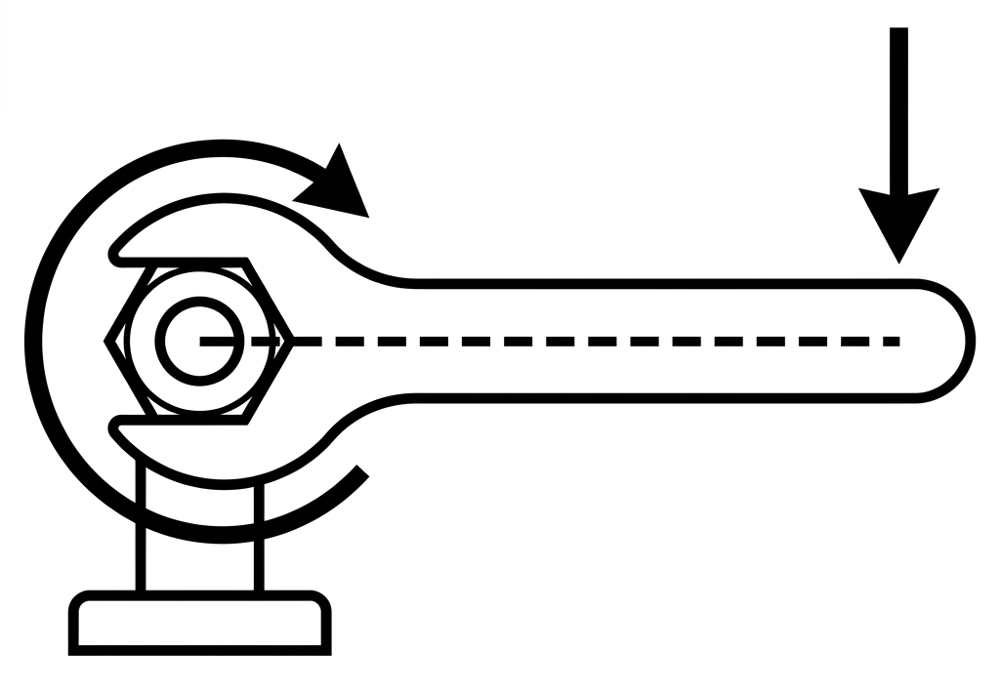
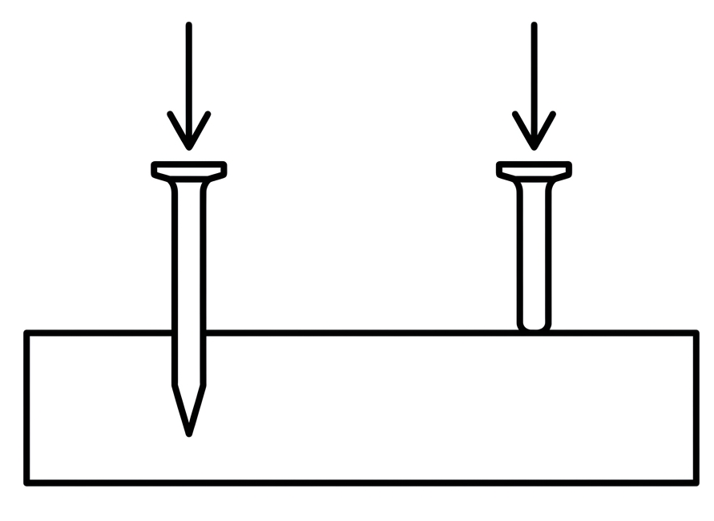
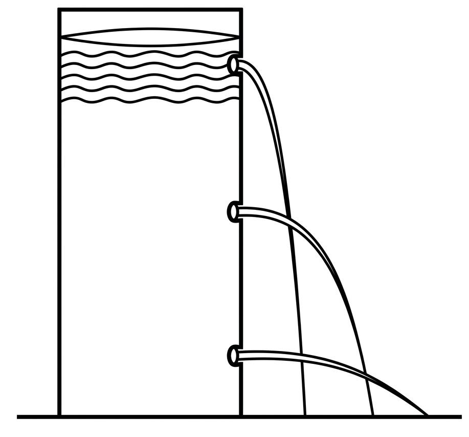

Vardaan Learning Institute
Physics • Chapter Notes
🌐 vardaanlearning.com
📞 9508841336
FORCE AND PRESSURE
1. Concept of Force
A body at rest remains at rest, and a body in motion continues to move in a straight line unless acted upon by an external cause. This external cause is known as Force.
Definition
A Force is a physical cause (a push or a pull) which tends to change the state of rest or the state of motion of a body. It can also change the size or shape of a non-rigid body.
Effects Produced by a Force:
- It can cause a stationary body to start moving (e.g., kicking a football at rest).
- It can stop a moving body (e.g., a fielder catching a moving cricket ball).
- It can change the speed of a moving body (e.g., pressing the brakes slows down a car).
- It can change the direction of motion (e.g., a hockey player striking a moving ball in a different direction).
- It can change the dimensions (size or shape) of a body (e.g., stretching a rubber band, squeezing a toothpaste tube).
Units of Force
S.I. Unit: Newton ($N$)
Gravitational Unit: Kilogram-force ($kgf$)
Relationship: $1\ kgf = 10\ N$ (approx).
One Newton is roughly the force you have to exert to hold a mass of 100g on your palm.
2. Turning Effect of a Force (Moment of Force)

If a force is applied to a stationary rigid body that is free to move, it produces straight-line (linear) motion. However, if the body is pivoted (fixed at a point or an axis), the applied force will cause the body to rotate about that pivot. This is called the turning effect.
Daily Life Examples of Moment of Force:
- Opening a Door: The handle of a door is always provided near the free edge, at a maximum distance from the hinges (pivot). This ensures maximum turning effect with minimum force. Pushing near the hinges requires a much greater force.
- Spanner/Wrench: A spanner used to loosen a tight nut has a long handle. Applying force at the far end of the handle generates a large torque easily.
- Hand Flour Grinder: The handle is placed near the outer rim of the circular stone to maximize the perpendicular distance from the center pivot.
Important
Sign Convention for Moment of Force:
If the force tends to turn the body in an anticlockwise direction, the moment of force is taken as positive (+). If the force turns the body in a clockwise direction, the moment is taken as negative (-).
3. Thrust and Pressure
A force can be applied to a surface in any direction. However, the force acting normally (perpendicularly) on a surface has a special name: Thrust.
Definition
Thrust is the total force acting perpendicular to a given surface. (Its unit is the same as force: Newton or kgf).
Pressure is defined as the thrust acting per unit area of a surface.
Pressure ($P$) = Thrust ($F$) / Area ($A$)
Units of Pressure:
- S.I. Unit: Newton per square metre ($N\ m^{-2}$), which is officially called Pascal (Pa).
- $1\ Pascal\ (Pa)$ is the pressure exerted by a thrust of $1\ Newton$ on a surface area of $1\ m^2$.
- Bigger unit: Kilo-pascal ($kPa$), where $1\ kPa = 1000\ Pa$.
Factors Affecting Pressure:

From the formula $P = F / A$, we can see that pressure depends on:
4. Examples of Pressure in Daily Life
A. Decreasing Area to Increase Pressure:
- Nails and Pins: A board pin or nail has a very sharp, pointed end. The small area of contact means that even a small pushing force creates immense pressure, driving the pin easily into the wood.
- Cutting Tools: Knives, axes, and scissors have very sharp edges (small area) to exert high pressure and cut objects easily.
- High Heels: A lady wearing pencil heels exerts much more pressure on the ground than a heavier man wearing flat, broad shoes, because the area of the pencil heel is extremely small.
B. Increasing Area to Decrease Pressure:
- Camel's Feet: A camel has broad feet, which spreads its weight over a large area of sand. The resulting low pressure prevents its feet from sinking deeply into the desert sand.
- Heavy Trucks: Heavy cargo trucks and trailers are provided with multiple pairs of broad double-tires. This increases the area of contact with the road, reducing the pressure and preventing damage to the road.
- School Bags: School bags are provided with wide, broad straps so that the weight of the bag acts over a larger area of the child's shoulders, reducing the painful pressure.
- Building Foundations: The foundations of tall buildings and dams are made extremely wide to distribute the massive weight over a large area, preventing the structure from sinking into the soil.
- Tanks and Bulldozers: Army tanks run on continuous broad steel tracks (caterpillar tracks) rather than wheels, distributing the huge weight and reducing pressure so they don't sink in mud or snow.
5. Liquid Pressure
Solids exert pressure only downwards due to their weight. However, liquids and gases (fluids) flow and lack a rigid shape. Therefore, a liquid contained in a vessel exerts pressure not only at the bottom but also on the walls of the container in all directions.
Factors Affecting Liquid Pressure:

The pressure at a point inside a liquid depends strictly on two factors:
6. Atmospheric Pressure
The earth is surrounded by an envelope of air extending up to about 200 kilometers. This blanket of air is called the Atmosphere.
Since air has weight, it exerts a massive thrust on the surface of the earth. The thrust exerted by the column of air on a unit area of the earth's surface is called Atmospheric Pressure.
Important
Standard Value: At sea level, atmospheric pressure is measured as 76 cm of Mercury column ($760\ mm\ Hg$), which is equivalent to $1\ atm$ or $1.013 \times 10^5\ Pa$ (roughly $100,000\ N\ m^{-2}$).
Note: As we go higher above the earth's surface (high altitudes), the amount of air above us decreases, causing the atmospheric pressure to decrease.
Applications and Effects of Atmospheric Pressure:
- Drinking with a Straw: When you suck through a straw, you remove the air inside it, reducing the pressure inside. The higher atmospheric pressure acting on the surface of the liquid in the glass pushes the drink up into the straw.
- Rubber Suckers: Used for hooks in bathrooms. When pressed against a smooth wall, air is forced out, creating a low pressure inside. The heavy atmospheric pressure from the outside strongly holds the sucker against the wall.
- Filling a Syringe or Fountain Pen: Pulling the plunger removes air, dropping the pressure inside the barrel. Atmospheric pressure on the liquid ink/medicine forces it up into the tube.
- Taking Oil from a Sealed Tin: If you make only one hole in an oil tin, the oil won't come out easily because air cannot enter to push it out. If two holes are made, air enters through one hole, and its atmospheric pressure pushes the oil out smoothly from the other.
- Nose Bleeding at High Altitudes: Human bodies are adapted to standard atmospheric pressure at ground level (our internal blood pressure balances the external air pressure). At high altitudes, external air pressure drops significantly, but internal blood pressure remains high. This imbalance can cause delicate blood vessels in the nose to burst, resulting in a nosebleed.
- Lizards on Walls: The feet of lizards act like suction pads. They stick to walls due to atmospheric pressure pushing them securely against the surface.